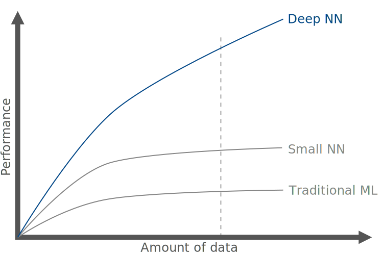
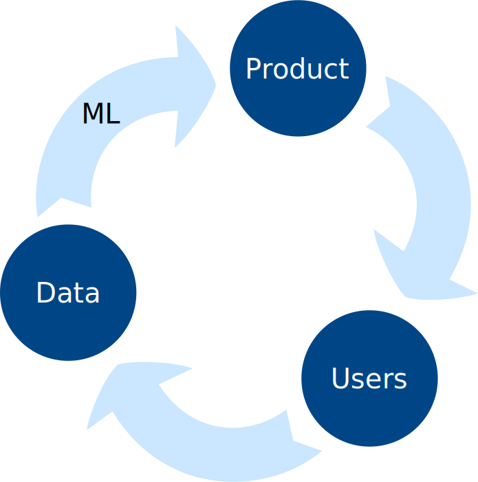
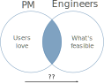
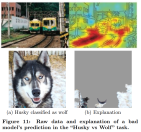
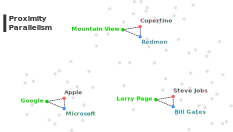
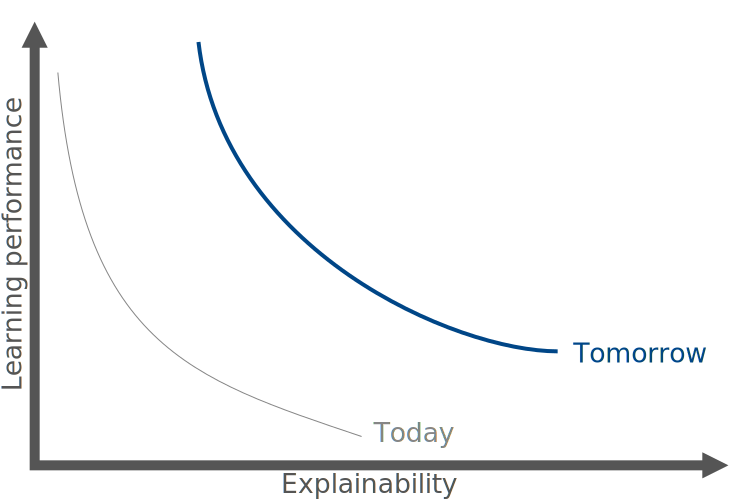
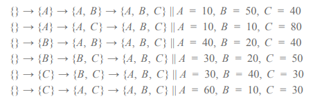
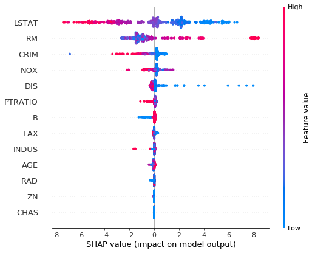
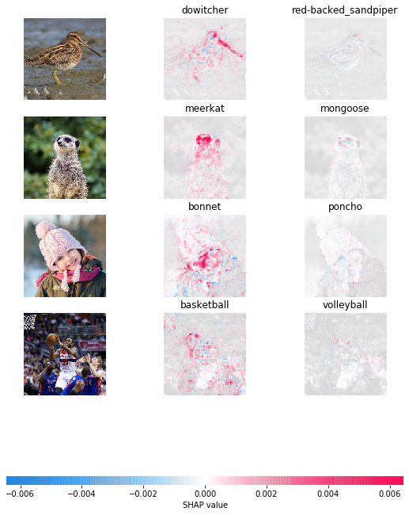

Explainable AI
Miguel Sánchez de León Peque
2020
Presentation
Hi! 👋
- Miguel Sánchez de León Peque
- OpenSistemas
- Data scientist
- Programming, data, machine learning
- Python ❤️
Abstract
- AI
- Supervised learning
- XAI
- Feature attributions, WIT, Google…
Introduction
AI is the new electricity ⚡
- IT, healthcare, transportation… heirdressing?
- Mostly supervised (based on economic value)
Can AI do it? 🤔
- No universal rule
- Can a human do it?
- Feasible
- Data
- Insights
- Takes a human less than 1 second of thought?
Why now?

Resources
- ✅ Algorithms
- ✅ Computing power
- ❌ Data
- ❌ Talent
Data scarcity?

AI Product management

Communicate through data
Come up with a good dataset:
- 10 years of audio recordings
- Accents (Spanish, Mexican…)
- Noise (cafe, car…)
- Bandwidth
- Skew (training/testing draw in an IDD* manner)
*Independently and identically distributed
Impact on business 💰
Supervised learning
Mapping
- Spam detection
- Image classification
- Speech recognition
- Language translation
- Add clicking
Expectations ❤️
Reality

Can be much worse… 🤦♀️
- Classifying black people as monkeys
- Thiking all tanks are enemies at night
- Sex bias
- Racial bias
Word embedding

Gender analogies 👫
- she
- he
- sister
- brother
- nurse
- doctor
- OMG
- WTF
- feminist
- realist
And more…
- computer programmer –> homemaker?
- mexicans –> hipanics, latinos, illegals…?
Demo 👀
XAI
Definition
XAI is the ability to explain or to present in understandable terms to a human

Problem: why?
Goal 🎯

- Inform and support human decision
- Trust in model predictions
- Transparency of the methodology
- Scope of the model
- Enable debugging
- Enable auditing
- Verify generalization ability
Research 🧪
- Input attribution: LIME, LOCO, SHAP, DeepLift, XRAI…
- Concept testing/extraction: TCAV, DeepR…
- Example influence/matching: MMD Critic, Influence Functions, Attention-Based Prototypical Learning
- Distillation: distilling a neural network into soft decision tree
Feature attributions
Features
- Not independent!
- Attribution? 🤔
- Game theory: Shapley* values
*not the one in “A Beautiful mind”, that was Nash
Shapley values
N employees and v(N) profit to distribute

A_{avg} = 30, B_{avg} = 25, C_{avg} = 45
It is a complex problem
- Baselines: \{B, C\} \rightarrow [\beta_1, x_2, x_3]
- Complexity: \mathcal{O}(n!)
- Solutions: SHAP
SHAP integrates and improve other previous methods such as LIME
Features force 💪

Features summary

Deep learning example

Advantages 👍
- Debugging models (i.e.: detecting radiologist’s pen marks)
- Optimizing models (i.e.: remove less important features)
Limitations
- Attributions are specific to individual predictions (but you can aggregate)
- Does the issue come from the model or the data?
- Adversarial attacks
Other examples
TreeExplainer: Tree SHAP, a fast and exact algorithm for ensembles of trees:
DeepExplainer: Deep SHAP, a faster but approximate algorithm for DL models:
KernelExplainer: Kernel SHAP, a model-agnostic method to estimate SHAP values:
Google 👀
Examples:
What-If-Tool
Features ✅
- Compare multiple models
- Visualize inference results
- Visualize feature attributions
- Arrange datapoints by similarity
- …
- …
- Edit a datapoint and see how the model performs
- Compare counterfactuals to datapoints
- Experiment using confusion matrices and ROC curves
- Test algoritmic fairness constraints